22 scenes · material and motion review
See the latest larger-form before-and-after review →
Each page has at least two scenes. Click or tap the live scene to advance. Pause remains a separate control; dragging does not change scenes.
These materials use procedural environment reflections, thickness-weighted light transmission and internal illumination. They approximate subsurface scattering and glass for real-time rendering; they do not trace the surrounding scene through the glass.
Each clip is five seconds at 1280 × 492, showing camera and scene movement from the same starting time. The adjacent mobile image shows the narrower composition.
Home
Soft hallway
Warm wall materials retain their softer character; the floor picks up broad environment reflections.
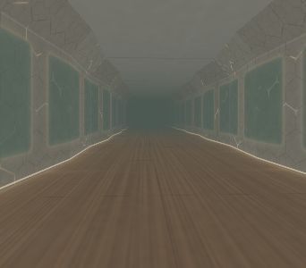
Mobile compositionLight atrium
Forward travel through lit glass arches. Stone floor catches broad reflected light.
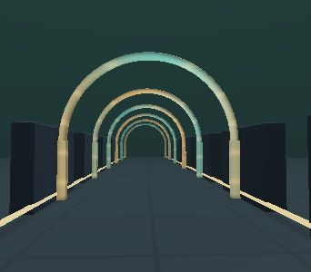
Mobile compositionArcade
Arcade machines
CRT glass catches softbox reflections. Cabinet paint stays matte and the floor remains restrained.
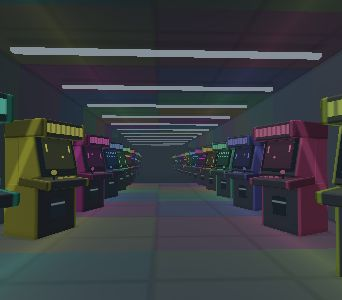
Mobile compositionPinball lounge
Three sloped playfields with glass bumpers, moving chrome balls, illuminated lanes and illuminated score displays.
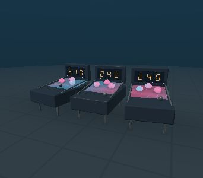
Mobile compositionOpen Source
Living Lightning
Preserves its distinct geometry and camera travel. Thin features receive absorption-weighted backlight, refracted internal veins and Fresnel-weighted environment reflections.
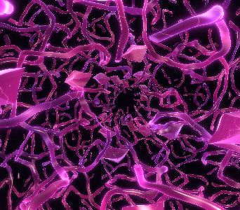
Mobile compositionLuminous Roots
Preserves its distinct geometry and camera travel. Thin features receive absorption-weighted backlight, refracted internal veins and Fresnel-weighted environment reflections.
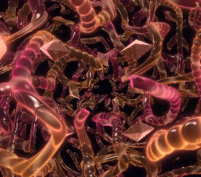
Mobile compositionFractal Coral
Preserves its distinct geometry and camera travel. Thin features receive absorption-weighted backlight, refracted internal veins and Fresnel-weighted environment reflections.
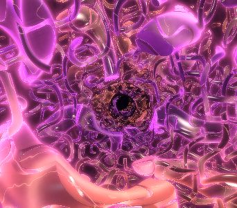
Mobile compositionRibbon Vortex
Preserves its distinct geometry and camera travel. Thin features receive absorption-weighted backlight, refracted internal veins and Fresnel-weighted environment reflections.
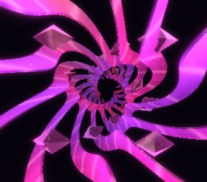
Mobile compositionCrystal Mycelium
Preserves its distinct geometry and camera travel. Thin features receive absorption-weighted backlight, refracted internal veins and Fresnel-weighted environment reflections.
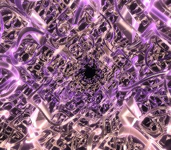
Mobile compositionRecursive Bloom
Preserves its distinct geometry and camera travel. Thin features receive absorption-weighted backlight, refracted internal veins and Fresnel-weighted environment reflections.
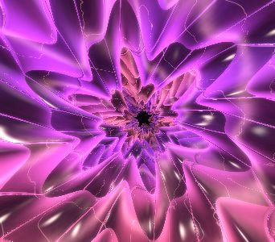
Mobile compositionMolten Glass
Preserves its distinct geometry and camera travel. Thin features receive absorption-weighted backlight, refracted internal veins and Fresnel-weighted environment reflections.
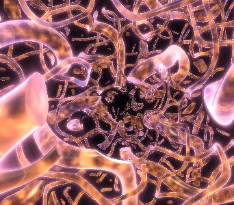
Mobile compositionNeon Mandelbulb
Preserves its distinct geometry and camera travel. Thin features receive absorption-weighted backlight, refracted internal veins and Fresnel-weighted environment reflections.
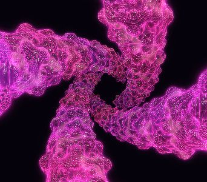
Mobile compositionAurora Weave
Preserves its distinct geometry and camera travel. Thin features receive absorption-weighted backlight, refracted internal veins and Fresnel-weighted environment reflections.
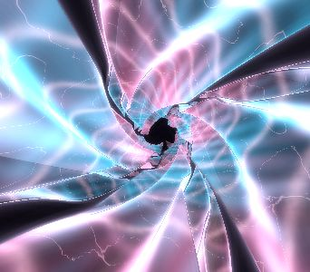
Mobile compositionFractal Cathedral
Preserves its distinct geometry and camera travel. Thin features receive absorption-weighted backlight, refracted internal veins and Fresnel-weighted environment reflections.
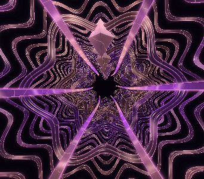
Mobile compositionServices
Assembly bench
Layered materials gain selective transmission and grazing reflections without changing the assembly motion.
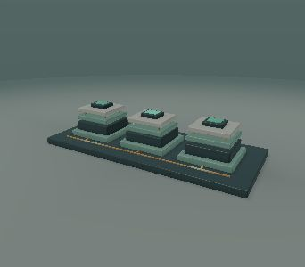
Mobile compositionSignal foundry
Three rotating translucent modules surround a glowing core. Repeating fins are bounded to each module.
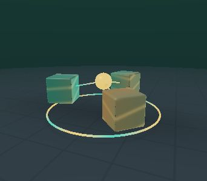
Mobile compositionPortfolio
Sculpture gallery
Crystal and plate materials gain thickness-weighted backlighting and view-dependent reflections.
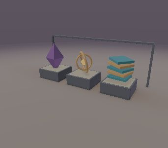
Mobile compositionPrismatic garden
Rotating glass-petal sculptures with warm light inside and cool reflections across their surfaces.
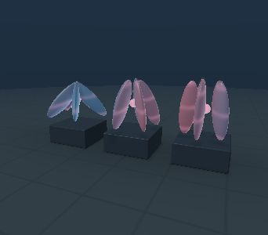
Mobile compositionTeam
Idea constellation
Six contributors orbit a shared warm light. Curved links remain attached while their endpoints move.
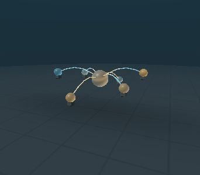
Mobile compositionContact
Connected nodes
Nodes and links catch environment reflections and warmer light through their edges.
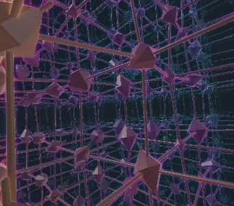
Mobile compositionResonance rings
Three connected portals with traveling signal beads, translucent rings and metal rims.
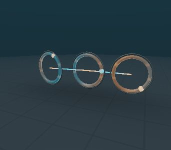
Mobile composition